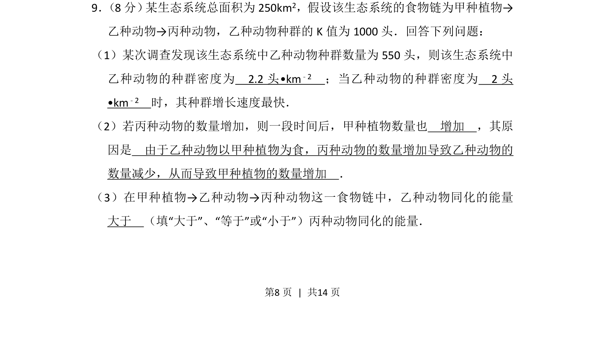
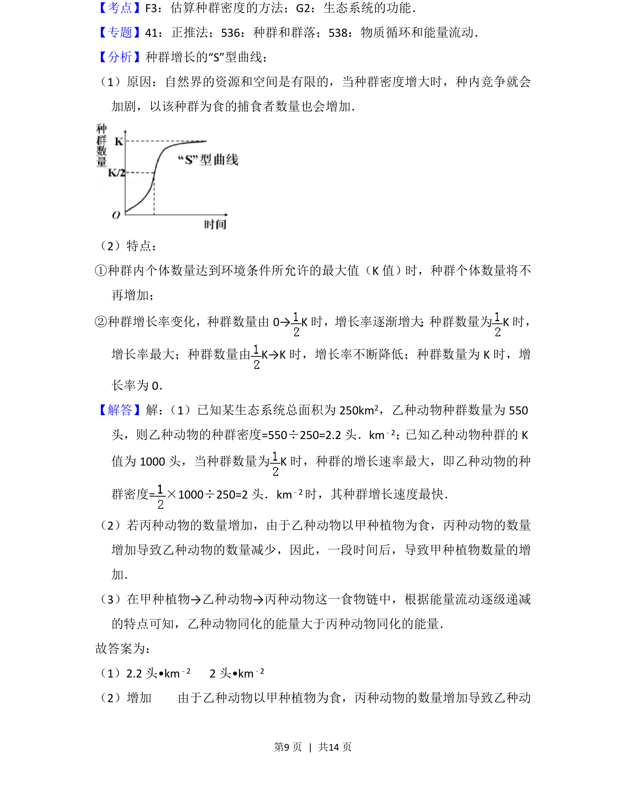
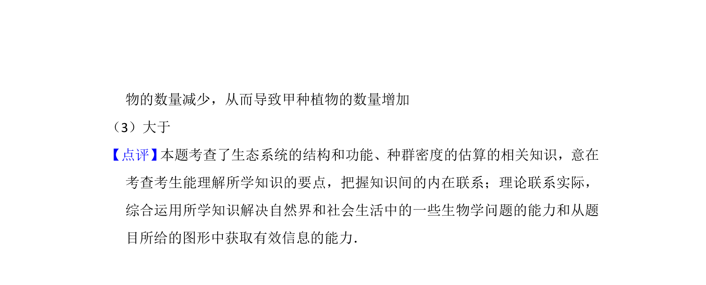

2015-新课标Ⅱ-09
考点：种群密度 食物链 能量流动
题面


摘要
该题考查生态系统中的种群密度计算、食物链关系和能量流动特点。
关联考点
答案与解析


📄 原 PDF 第 8 页：
素材/真题/吉林/2008-2024·（吉林）生物高考真题/2015年高考生物试卷（新课标Ⅱ）（解析卷）.pdf
题干文本
9． （8分） 某生态系统总面积为250km2，假设该生态系统的食物链为甲种植物→ 乙种动物→丙种动物，乙种动物种群的K值为1000头．回答下列问题： （1）某次调查发现该生态系统中乙种动物种群数量为550头，则该生态系统中 乙种动物的种群密度为 2.2头•km ﹣2 ；当乙种动物的种群密度为 2头 •km﹣2 时，其种群增长速度最快． （2）若丙种动物的数量增加，则一段时间后，甲种植物数量也 增加 ，其原 因是 由于乙种动物以甲种植物为食，丙种动物的数量增加导致乙种动物的 数量减少，从而导致甲种植物的数量增加 ． （3）在甲种植物→乙种动物→丙种动物这一食物链中，乙种动物同化的能量 大于 （填“大于”、“等于”或“小于”）丙种动物同化的能量．